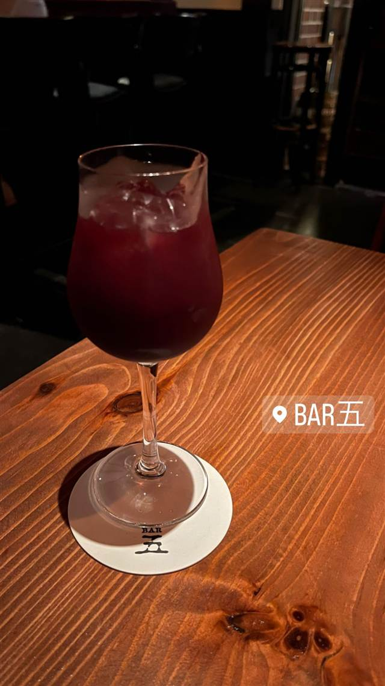
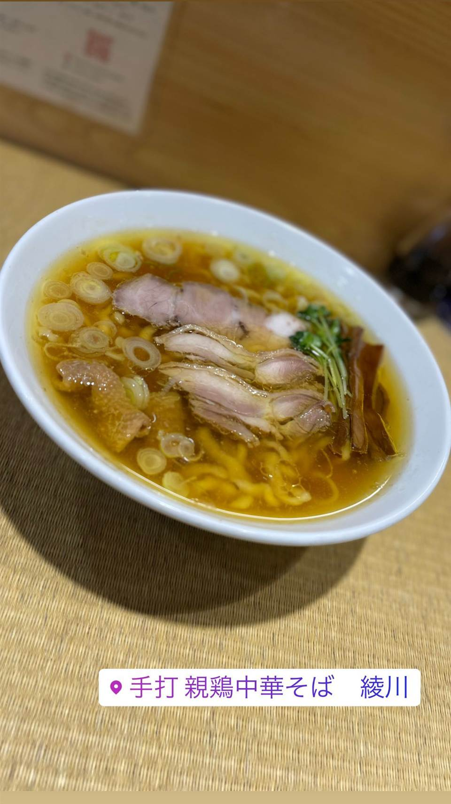

BAR五(バーゴ)
『Tabelog Bar 100』選出のオーセンティックバー
BAR五
恵比寿駅西口徒歩2分、オーナー西川大五郎さんの名から一字取って「五」を店名にしたオーセンティックバー。フィーバーツリーなど素材にこだわったカクテルとモルトウイスキー、シガーとのマリアージュが楽しめ、食べログ「Tabelog Bar 100」にも選ばれている。
TRIVIA
豆知識
- 店名の「五」はオーナー西川大五郎さんの名前の一字から
- 食べログ「Tabelog Bar 100」2022年版に選ばれた
REVIEWS
世間の評判
3.69食べログ
カクテルの質と大人の雰囲気
- ジントニックやマティーニなど職人技のカクテルを評価する声が多い
- 落ち着いた大人の雰囲気とスタッフの対応の良さを評価する声が多い
- 取り扱うウイスキーの銘柄の品揃えの豊富さを高く評価する声もある
- カジュアルすぎる服装や大声での私語には注意が必要という声もある
食べログ 口コミ250件
| 看板 | モルトウイスキーとカクテル、シガーとのマリアージュ |
|---|---|
| こだわり | 割材にフィーバーツリーのイエローラベルを使うなど素材にこだわり、一杯一杯丁寧に作る。北海道産蛸のスモークなど手の込んだおつまみも提供 |
| 掲載・評価 | 食べログ「Tabelog Bar 100」2022年版に選出 |
| どこから | 都心 |
| 営業時間 | 月〜土 18:00-00:00 日 休み |
| 予算 | 夜 ¥4,000～¥4,999 |
| 定休日 | 日曜・祝日 |
| 場所 | 恵比寿 東京都渋谷区恵比寿西1-8-2 恵比寿ウエストパレスビルB1F |
| メモ | 恵比寿駅西口から徒歩2分、内装に凝った落ち着いたオーセンティックバー |
食べたもの：カクテル
NEARBY
近い店・同じ系統の店
-

★ 醤油・中華そば 恵比寿 手打 親鶏中華そば 綾川 青竹手打ちの麺と親鶏スープを合わせた親鶏中華そば 昼 ～¥999 夜 ～¥999 -
 アメリカンダイニング 恵比寿駅
MADISON NEW YORK KITCHEN（マディソン ニューヨーク キッチン）
2014年開業、赤とゴールドの内装で味わう熟成肉のステーキ
夜 ¥5,000～¥5,999
アメリカンダイニング 恵比寿駅
MADISON NEW YORK KITCHEN（マディソン ニューヨーク キッチン）
2014年開業、赤とゴールドの内装で味わう熟成肉のステーキ
夜 ¥5,000～¥5,999
-
 ピザ 恵比寿駅
L'Antica Pizzeria da Michele 恵比寿店
1870年創業のナポリ本店直伝、空輸チーズのマルゲリータ
昼 ¥2,000～¥2,999 夜 ¥4,000～¥4,999
ピザ 恵比寿駅
L'Antica Pizzeria da Michele 恵比寿店
1870年創業のナポリ本店直伝、空輸チーズのマルゲリータ
昼 ¥2,000～¥2,999 夜 ¥4,000～¥4,999
-
 ピザ 恵比寿駅(西口)
pizza marumo（ピッツァ マルモ）
和食出身の店主が薪窯で焼く、24時間発酵の低温生地ピザ
夜 ¥5,000～¥5,999
ピザ 恵比寿駅(西口)
pizza marumo（ピッツァ マルモ）
和食出身の店主が薪窯で焼く、24時間発酵の低温生地ピザ
夜 ¥5,000～¥5,999
-
 パスタ 恵比寿
BANDERUOLA-Cuscusseria-バンデルオーラ
シチリア・トラーパニ郷土料理クスクスを専用の器で蒸す製法を再現する専門店
昼 ¥1,000～¥1,999 夜 ¥6,000～¥7,999
パスタ 恵比寿
BANDERUOLA-Cuscusseria-バンデルオーラ
シチリア・トラーパニ郷土料理クスクスを専用の器で蒸す製法を再現する専門店
昼 ¥1,000～¥1,999 夜 ¥6,000～¥7,999
-
 イタリアン 恵比寿駅
ブラチェリア デリツィオーゾ イタリア（旧店名：デリツィオーゾ イタリア）
炭火焼き「熾火」にこだわる、恵比寿2000年創業のイタリアン
夜 ¥6,000～¥7,999
イタリアン 恵比寿駅
ブラチェリア デリツィオーゾ イタリア（旧店名：デリツィオーゾ イタリア）
炭火焼き「熾火」にこだわる、恵比寿2000年創業のイタリアン
夜 ¥6,000～¥7,999